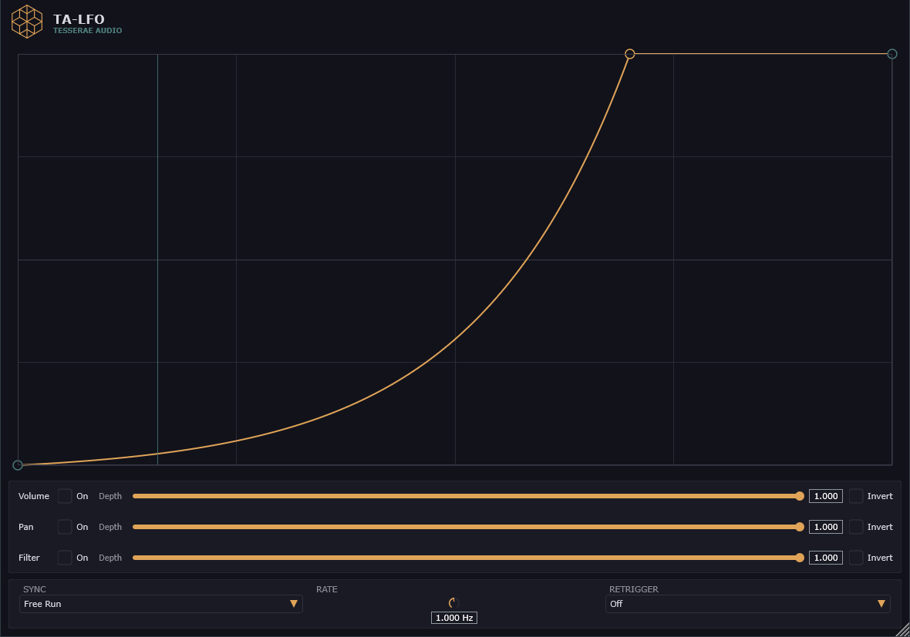

TA-LFO
A single modulation curve, drawn by hand, driving volume, pan, and filter cutoff - synced to your tempo or running free. Free, no account, no license.

One curve, three destinations
Draw the shape once, then decide what it moves - and how it gets triggered.
Custom curve editor
Add, move, and delete points directly on the curve. Each segment has its own shape: Linear, Exponential, S-Curve, or Hold.
Tempo sync
21 rhythmic divisions from 1/1 to 1/64, including dotted and triplet - or run free at any rate from 0.01 to 20 Hz.
Three modulation targets
Volume, pan, and filter cutoff, each with its own depth and invert - route the same curve to one destination or all three at once.
Sidechain retrigger
Reset the cycle on an incoming transient from a dedicated sidechain input - classic pumping and ducking, driven by your own curve.
MIDI retrigger
Or reset on note-on, for modulation that stays locked to what you're playing.
Grid snapping
Curve points snap to the active tempo division by default - hold Ctrl to place them freely.
Real-time playhead
Watch the cycle move across the curve as it plays, right where you're editing it.